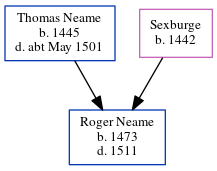

Roger Neame 1473 - 1511
[ Home ] | [ Calendar ] | [ Surnames Index ] | [ Errors ] | [ Family History ]The child of Thomas Neame and Sexburge, Roger Neame, the fourteen times great-uncle of Nigel Horne, was born in Woodnesborough, Kent, England in 1473.
He died in Woodnesborough in 15111.
Parents
- Thomas was born in 1445
- was born in 1442
Citations
- UK, Extracted Probate Records Online publication - Provo, UT, USA: Ancestry.com Operations Inc, 2009.Original data - Electronic databases created from various publications of probate records.Original data: Electronic databases created from various publications of probate records.
Family Tree
Map
Generated by ged2site. Last updated on Jul 3, 2024
Known Issues
Birth date (1473) has no citations